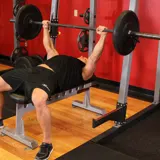
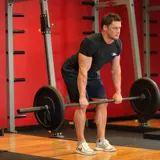
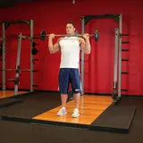
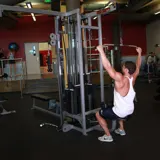
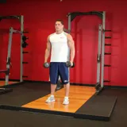
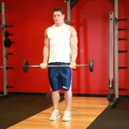
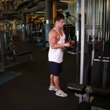

Torso A
7 ejercicios · 55 min · intermedioPecho6 seriesEspalda6 seriesHombros4 seriesBrazos4 series
La última vez, el lunes: 52 min y 6.120 kg
Ejercicios
Calienta 5 min antes
Press de banca con barra3 × 6–10 · descanso 2 minÚltima: 80 kg × 8 · récord
Remo con barra3 × 6–10 · descanso 2 minÚltima: 70 kg × 10
Press militar de pie3 × 6–10 · descanso 2 minÚltima: 42,5 kg × 7
Jalón al pecho3 × 10–12 · descanso 90 sÚltima: 60 kg × 12 · récord
Elevaciones laterales3 × 12–15 · descanso 60 sÚltima: 10 kg × 14
Curl de bíceps con barra2 × 10–12 · descanso 60 sPrimera vez
Extensión de tríceps en polea2 × 10–12 · descanso 60 sÚltima: 25 kg × 12